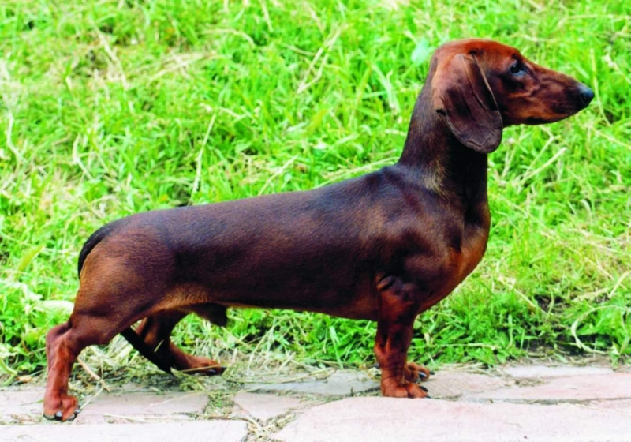

Такса
- Продолжительность жизни: 12-15 лет
- Группа: Охотничья
- Окрас шерсти: два основных окраса, которые включают в себя: шоколадный, черный, серый и желто-коричневый. На глазах, на мордочке, на внутреннем крае уха, на груди, на горле – коричневые отметины
- Длина шерсти: длинная, короткая
- Линька: умеренная.
- Рост : около 35 см
Такса - охотничья порода, обладающая удлиненным телом и короткими конечностями. Она имеет немецкое происхождение.
В переводе с немецкого языка "dachs" означает барсук, а "hund" – это собака. В Германии ее называют Dackel или Teckel.
Такса стандартного размера была выведена для охоты на барсуков, а карликовая такса - для охоты на кроликов.
Таксы бывают двух размеров и трех видов шерсти (гладкошерстные, длинношерстные, жесткошерстные). Они - маленького роста.
Такса - очень умная порода. Она очень энергична и коммуникабельна. Каждая собака этой породы – яркая индивидуальность.
Такса обладает необычайным бесстрашием: она не понимает, насколько она маленькая. Она может стать хорошей помощницей в силу своей подвижности и выносливости.
Такса не может жить без постоянного взаимодействия с людьми или другими животными. Если ей становится скучно, то она становится агрессивной и начинает крушить все вокруг. Когда Вы – рядом, играйте с ней и выполняйте различные упражнения.
Такса очень упряма, поэтому обучение повиновению очень важно во время тренировок и упражнений. После того как она была правильно обучена, она становится более лояльной и преданной своим владельцам. Если кому-то из членов семьи грозит опасность, она без раздумий нападет на обидчика или другое животное.
Такса чрезвычайно игрива. Она обожает игры, в которых нужно что-то принести, спрятать, искать или преследовать.
Такса – это не самый лучший выбор для тех, у кого в семье есть маленькие дети. Взрослая собака сможет найти общий язык с ребенком. Вам необходимо научить детей бережно обращаться с таксой (особенно с карликовой), так как она очень хрупкая из-за своего размера.
